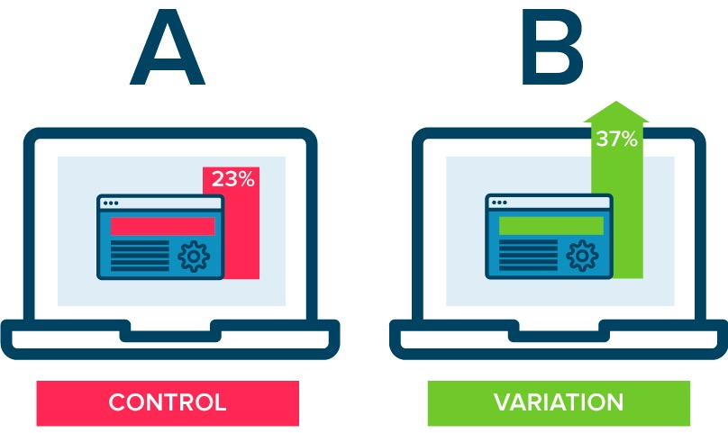

Compare two versions of the same design to see which one performs statistically better against a predetermined goal.
A method reminding the researcher to attend to, document, and code information under a framework of:
- Activities
- Environments
- Interactions
- Objects
- Users
A process used to meaningfully cluster observations and insights from research.

A systematic examination of objects that contributes to an understanding of their cultural contexts.
A method that can reveal statistically relevant data about what people are doing on your website, to help identify the usability enhancements with the biggest impact
Used to systematically document location-based observations of human activity, using annotated maps, time-lapse photography, etc.
Situates brainstorming in physical experience, combining role-playing and simulation to inspire new ideas and empathic prototyping.
Beyond creating lists of new ideas and concepts, helps create new knowledge by visually structuring a deep dive into a problem space.
Enables teams to paper-prototype the interaction and value exchange among people, artifacts, and environments in a multichannel system.
Can help clarify user comprehension and meaningful categorization
A research strategy involving in-depth investigation of single events or instances in context, using multiple sources of research evidence.
A visualization of how people make sense of a particular problem space. MOst effective when used to structure complex problems and to inform decision making.
A method that evaluates whether the order of cues and prompts in a system reflect the way people cognitively process and anticipate tasks
Allows participants to visually express thoughts and feelings that are otherwise difficult to articulate through traditional means.
The process of conducting research to evaluate the usability and learnability of your competitors’ products.
A visual framework that allows designers to absorb new concepts into an existing domain to draw new insights.
The systematic description of form and content of communication materials expressed in themes and counted occurrences of concepts.
Tells you what your content is. A content audit makes recommendations as to what your content should be.
A customer-centered process that makes designer work concrete and explicit, so that every step feels less like design magic.
An immersive, contextual method of observing and interviewing that reveals underlying (and invisible) work structure.
Collections of physical elements conveniently organized for participatory modeling, visualization, or creative play by users, to inform and inspire design and business teams.
Understanding how users experience your product at critical moments can help you optimize your designs for future users.
Occurs when an undefined, large group of people (a crowd) voluntarily responds to an open call and completes tasks and microprojects.
Provocative instruments given to participants to inspire new forms of self-understanding and communication about their lives, environments, thoughts, and interactions.
Capture the day-to-day context in which people engage with your product or service.
When superior design features and characteristics inspire subsequent rounds of ideas, the end result is more likely to be an optimized design solution.
Approximates the immersion methods of traditional ethnography, to deeply experience and understand the user’s world for design empathy and insight.
A form of participatory design consolidating creative co-design methods into organized sessions for several participants to work with design team members.
When there is disagreement about which design direction to pursue, desirability testing shifts the conversation from which design is best to which design elicits the optimal emotional response from users.
Guiding artifacts that allow people to conveniently and expressively convey personal details about their daily life and events to design teams.
Allows designers to easily gather rich stories of lived experiences from participants, using thoughtful prompts and guiding and framing questions in conversation.
Used to develop solid design arguments grounded in research observations and anchored to business directives.
Provides an assessment of tools, equipment, devices, workstations, workplaces, or environments, to optimize the fit, safety, and comfort of use by people
Involves the testing of prototypes, products, or interfaces by real potential users of a system in design development.
An approach that bases decisions for effective design on the implications of credible research and assessed outcomes, rather than sole reliance on intuition and anecdotal information.
Facilitates active participation in design through subjective engagement with a prototype system or service, product, or place.
Allows the designer to collect snapshots of behaviors, interactions, thoughts, or feelings from people who self-report in real time when signaled at random or timed intervals
Measures the effect that an action has on a situation by demonstrating a causal relationship or determining conclusively that one thing is the result of another.
Defined by user and product studies, intended to forge an empathic knowledge base, particularly when designers may be working in unfamiliar territory
Gathers detailed technical information on exactly where and for how long participants are looking—and not looking—when using an interface or interacting with products.
Given a component kit of parts, users can provide insight into product or interface configurations as guiding information for designers.
Allows the researcher to unobtrusively gather information by looking and listening without direct participation or interference with the people or behaviors being observed.
The dynamic created by a small group of well-chosen people, when guided by a skilled moderator, can provide deep insight into themes, patterns, and trends.
Engages users in creative opportunities to express their feelings, dreams, needs, and desires, resulting in rich information for concept development.
Provide an open canvas on which participants can freely offer their written or visual comments about an environment or system, directly in the context of use.
An agreed-upon set of usability best practices that can help detect usability problems before actual users are brought in to further evaluate an interface.
A collage of collected pictures, illustrations, or brand imagery can be used to visually communicate an essential description of targeted aesthetics, style, audience, context, or other aspects of design intent.
A fundamental research method for direct contact with participants, to collect firsthand personal accounts of experience, opinions, attitudes, and perceptions.
When the traditional meeting format fails to achieve group consensus, the KJ Technique can be used to help teams work through a problem space and prioritize what should be focused on first
Not all product attributes are equally important to the customer. Use Kano Analysis to determine which product attributes have the greatest impact on customer satisfaction.
When you need to keep a pulse on critical success factors for your product or service, a few well-selected KPIs can keep you informed and guide you when you need to course-correct.
Use laddering to reveal the connection between a product’s obvious physical characteristics and the deeper, more profound personal values that it reinforces in a customer’s life.
Literature reviews are an integral part of academic papers, but are also a useful component of any design project, to collect and synthesize research on a given topic.
A personal letter written to a product often reveals profound insights about what people value and expect from the objects in their everyday lives.
People tend to behave in ways consistent with dearly held beliefs. The mental model diagram can help you articulate root causes behind behaviors and develop solutions that deeply resonate with people.
When a topic or a problem has many moving parts, mind mapping provides a method of visually organizing a problem space in order to better understand it.
A fundamental research skill, observation requires attentive looking and systematic recording of phenomena—including people, artifacts, environments, events, behaviors and interactions.
Simultaneously exploring multiple design opportunities can help teams keep from fixating on a design direction too early, improve the nature of design critiques, and lead to more effective design results.
Participant observation is an immersive, ethnographic method for understanding situations and behaviors through the experience of membership participation in an activity, context, culture, or subculture.
PAR is a cyclical, collaborative research process that seeks to intentionally change the community or other aspects that are the focus of the inquiry.
Participatory design is a human-centered approach advocating active user and stakeholder engagement throughout all phases of the research and design process, including co-design activities.
Personal inventories allow the designer to see and understand the relevance of objects in a user’s life from the participant’s point of view, to inspire design themes and insight.
Personas consolidate archetypal descriptions of user behavior patterns into representative profiles, to humanize design focus, test scenarios, and aid design communication.
Photo studies invite the participant to photo-document aspects of his or her life and interactions, providing the designer with visual, self-reported insights into user behaviors and priorities.
Picture cards contain images and words that help people think about and tell true stories of their life experiences, grounded in context and detail.
Prototyping is the tangible creation of artifacts at various levels of resolution, for development and testing of ideas within design teams and with clients and users.
Questionnaires are survey instruments designed for collecting self-report information from people about their characteristics, thoughts, feelings, perceptions, behaviors, or attitudes, typically in written form.
RITE is a powerful formative usability inspection method that helps teams identify and remove major problems in an interface early in the design process before costly prototypes are built.
Remotely observing users completing tasks on their own electronic devices can reveal rich insights into contexts of use that cannot be replicated in a controlled lab environment.
Research through design recognizes the design process as a legitimate research activity, examining the tools and processes of design thinking and making within the design project, bridging theory and building knowledge to enhance design practices.
Acting the role of the user in realistic scenarios can forge a deep sense of empathy and highlight challenges, presenting opportunities that can be met by design.
Scenario description swimlanes are deliverables that visualize the activities of multiple actors in a flow of events and prove that a holistic perspective is greater than the sum of its parts.
A scenario is a narrative that explores the future use of a product from a user’s point of view, helping design teams reason about its place in a person’s day-to-day life.
Secondary research consists of information collected and synthesized from existing data, rather than original material sourced through primary research with participants.
Semantic differentials can help reveal felt meanings that are a direct product of one’s experiences, culture, and dearly held beliefs.
Shadowing provides key insight into a participant’s activities and decision patterns as the researcher follows him or her closely throughout his or her daily routines.
Simulation exercises are deep approximations of human or environmental conditions, designed to forge an immersive, empathic sense of real-life user experiences.
Analyzing the words and phrases entered into a site search gives organizations insight into what people are looking for, which is an opportunity to evaluate how well site content meets those needs.
When people compare multiple design concepts in quick succession, design teams can learn how people react to new technology while also taking into account existing contextual and social factors.
Stakeholder maps help to visually consolidate and communicate the key constituents of a design project, setting the stage for user-centered research and design development.
Stakeholder walkthroughs bring end users, stakeholders, and the design team together to evaluate early prototypes, providing actionable recommendations for improvements and building empathy.
Storyboards provide a visual narrative that generates empathy and communicates the context in which a technology or form factor will be used.
Surveys are a method of collecting self-reported information from people about their characteristics, thoughts, feelings, perceptions, behaviors, or attitudes.
Task analysis breaks down the constituent elements of a user’s work flow, including actions and interactions, system response, and environmental context.
Territory maps are visual artifacts that represent the shared focus of the design team for anticipated design activities, including the identification of suggested stakeholders.
Building a thematic network is a step-by-step process that helps to identify, organize, and connect the most common themes in rich, qualitative data.
Think-aloud protocol is a method that requires participants to verbalize what they are doing and thinking as they complete a task, revealing aspects of an interface that delight, confuse, and frustrate.
Intercepting people at the precise moment they choose to complete a task provides keen insight into how they accomplish self-directed goals.
The guided tour is designed as a conversation that uses artifacts and the environment as touchstones for questions and insights.
Triading is an interviewing technique that reveals deep-seated attitudes, perceptions, and feelings toward brands, products, and services.
Triangulation is the convergence of multiple methods on the same research question, to corroborate evidence from several different angles.
Unobtrusive methods are used to acquire information without direct contact with participants, through nonreactive physical traces, archives, and observations.
The usability report is informed by empirical evidence, helping teams decide whether a product is usable enough to release, or needs revision and further testing with more participants.
Usability testing focuses on people and their tasks, and seeks empirical evidence about how to improve the usability of an interface.
A user journey map is a visualization of the experiences people have when interacting with a product or service, so that each moment can be individually evaluated and improved.
Value opportunity analysis maps the extent to which a product’s aspirational qualities align to people’s idealized lifestyle or fantasy version of themselves.
Web analytics are a gateway for your organization to become deeply invested in what your customers are doing online, and why.
Once your team has generated multiple design concepts, a weighted matrix can help identify and prioritize the most promising opportunities.
In the Wizard of Oz technique, a researcher (the wizard) simulates system responses from behind the scenes, while a participant engages with a system that appears to be real.
Word clouds are a method of information visualization that organizes text-based content into interesting spatial arrangements.